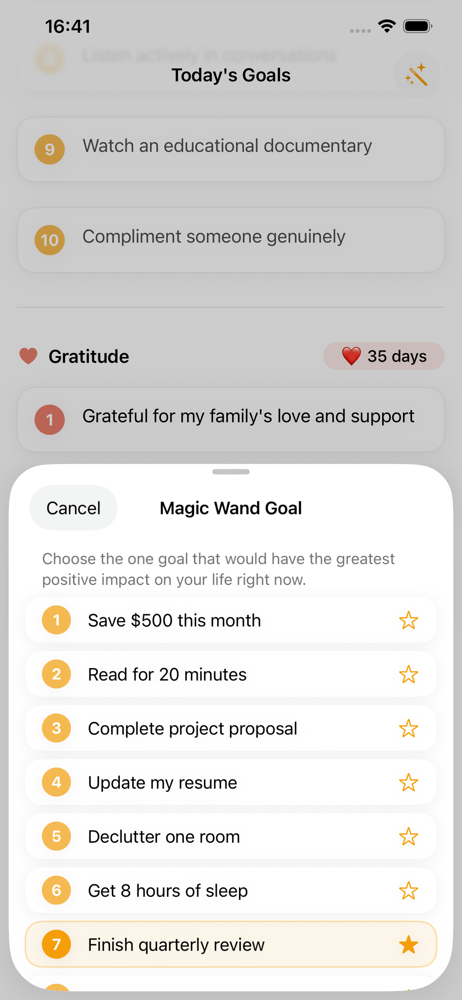
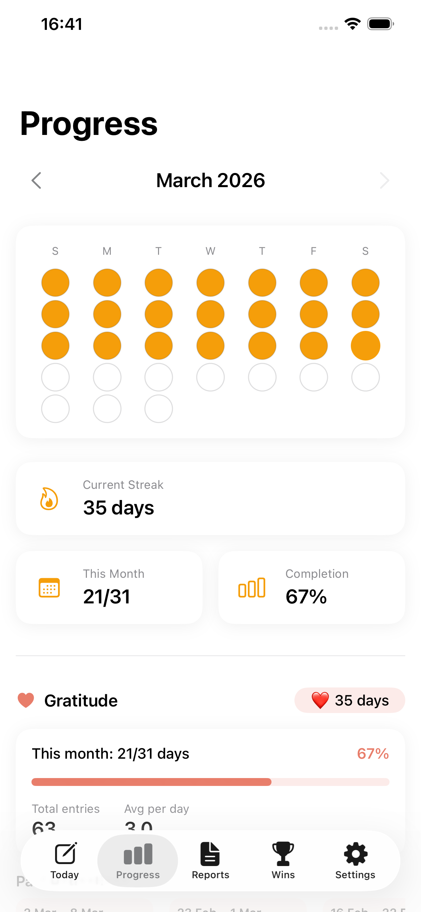
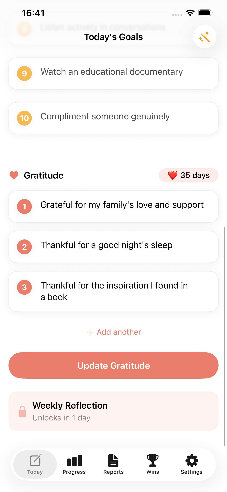
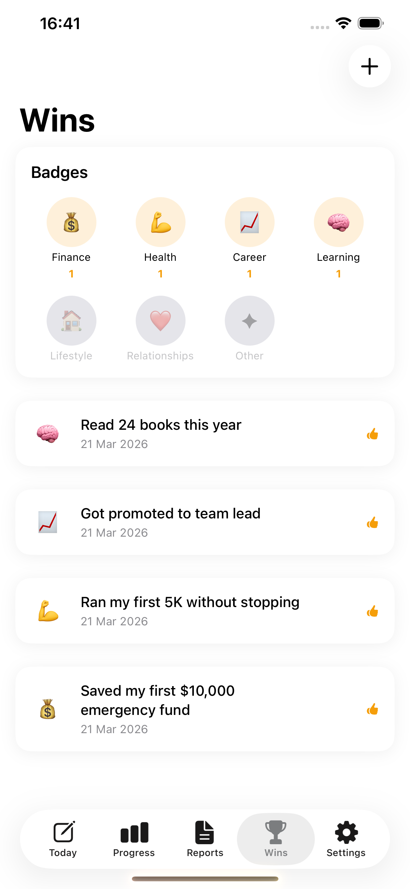

Why 10 Goal Writing & Manifest Is Different
Mindless copying
You reread yesterday's goals and write the same thing without thinking.
30-day lockout
Past entries are hidden. You write from memory, which forces genuine reassessment of what matters.
No real priority
Every goal feels equally important, so nothing gets real focus.
Magic Wand
Each morning, you pick the ONE goal that would have the greatest impact right now.
No insight into patterns
You journal daily but have no idea what your patterns reveal.
AI Monthly Report
After 10 days, AI analyzes your goals and shows your top priorities, categories, and trends.
Features
Write 10 Goals Every Morning
Start each day by writing up to 10 goals in affirmation format — as if they're already achieved. No reviewing yesterday. No copying. Pure clarity from memory.

Pick Your #1 Priority
After writing your goals, the Magic Wand asks: "Which ONE goal would have the greatest positive impact on your life right now?" This single decision drives focus and feeds into your AI analysis.

Track Your Consistency
Watch your streak grow day by day. The monthly dot grid shows your commitment at a glance — every filled dot is proof that you showed up. Track goal streaks and gratitude streaks side by side.

Gratitude Built In, Not Bolted On
Write daily gratitude entries alongside your goals. A 7-day lockout on past reflections prevents hedonic adaptation — a psychology-backed approach that keeps gratitude meaningful, not mechanical.

Celebrate What You've Achieved
Mark your wins across life categories — Finance, Health, Career, Learning, Lifestyle, and Relationships. Your badge collection becomes a visual map of growth.
How It Works
Morning — Write
Open the app. Write up to 10 goals from memory. Add gratitude entries. Pick your Magic Wand goal. Takes 3–5 minutes.
Evening — Review
Between 8–11 PM, re-read your goals in a calm, read-only view. No editing. Let them settle into your subconscious before sleep.
Monthly — Discover
After 10 days, your first AI report arrives. See your top goals, category patterns, and personalized insights. Compare reports month over month.
Frequently Asked Questions
What is the 10-goals method?
It's a proven goal-setting technique where you write 10 goals every day from memory, in affirmation format — as if they're already achieved. Writing from memory (not copying) forces you to genuinely reassess what matters most, rather than mindlessly repeating yesterday's list. This daily practice rewires your focus toward your true priorities.
Why can't I see my past goals?
10 Goal Writing & Manifest locks your past entries for 30 days on purpose. When you can see yesterday's goals, you copy them without thinking. The lockout forces you to write from memory, which means you only write down what genuinely matters to you right now. After 30 days, entries unlock for reflection.
What is the Magic Wand goal?
Each day after writing your goals, 10 Goal Writing & Manifest asks: "If you could only achieve ONE of these goals right now, which would have the greatest positive impact?" This daily prioritization exercise builds focus and feeds directly into your AI analysis, revealing which goals consistently matter most.
How does the AI report work?
After 10 days of consistent entries, 10 Goal Writing & Manifest generates your first AI-powered report. It analyzes your goal patterns, identifies your top recurring goals, breaks down which life categories you focus on, and provides personalized insights about your priorities and trends. Monthly reports get richer over time.
What is the evening review?
Between 8–11 PM (configurable), 10 Goal Writing & Manifest unlocks a read-only view of your day's goals. No editing allowed. The purpose is subconscious programming — re-reading your goals before sleep lets them settle into your mind overnight. Research suggests this primes your brain to work on solutions while you rest.
How does gratitude journaling work in 10 Goal Writing & Manifest?
Alongside your daily goals, you can write 1–5 things you're grateful for. Past gratitude entries are locked for 7 days to prevent hedonic adaptation — a psychological phenomenon where reflecting too often on the same things makes you take them for granted. Weekly reflections with AI-powered insights are available for Pro users.
Is 10 Goal Writing & Manifest free?
Yes — daily goal entry, gratitude journaling, the Magic Wand, evening review, streaks, progress tracking, and your first AI report are all free. Pro unlocks full report history, weekly insights, gratitude reflections, cross-analysis, and PDF export. There's a 30-day free trial of Pro so you can experience everything before deciding.
Does 10 Goal Writing & Manifest sync across devices?
Yes. 10 Goal Writing & Manifest uses iCloud to automatically sync your goals, gratitude entries, and reports across all your Apple devices. No account creation required — it uses your existing iCloud account.